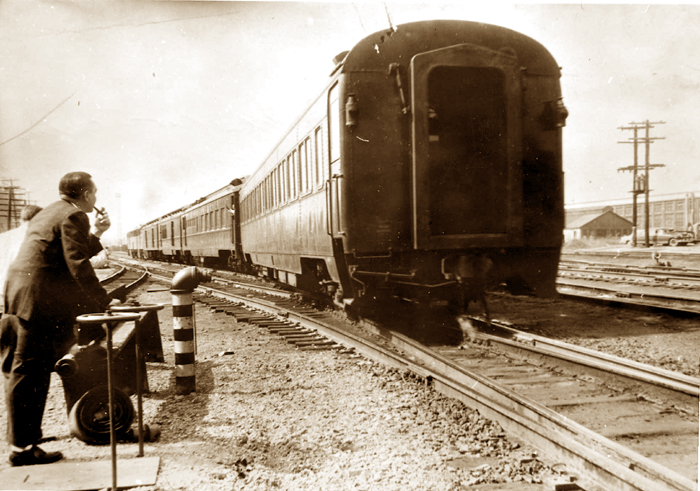

|
Black Diamond Express. 1896 Page Three.
Now that we have
looked at the original 1896 Black Diamond
Express As we know, the 4-4-0 American type was the power of choice during the first months of the trains operation in 1896, quickly replaced with the new Atlantics. The 4-4-2 Atlantic was the primary passenger power from 1896 to around 1906, when newer power began to arrive. As the 4-4-2 Atlantic replaced the 4-4-0 American, the Atlantic in its turn was also replaced by newer power as steam locomotive technology continually progressed. In 1902, ten 2-6-2
Prairies arrived, (which were later
rebuilt into 4-6-2's) In 1904/1905, with the JP Morgan standardization program, some dual-service 4-6-0 Ten-wheelers arrived, which could be found hauling the "Diamond" at times. The primary replacement for the Atlantics however was the 4-6-2 Pacific, which first arrived on the LV in 1905, in the form of eight huge (for the time) new 4-6-2 Camelbacks from Baldwin.
Baldwin
builders photo, 1905
In the same way that the 4-4-2 Atlantic
evolved from the
4-4-0, these 1905 Pacifics were in turn direct
decendants of the
Atlantics. They were essentially larger, heavier,
more powerful
Atlantics with an extra set of drivers.
The Pacifics began
to arrive in large numbers, and between
1905 and 1926 a total of 121 Pacifics joined the
LV roster. (source)
The 4-6-2 Pacific ended up being the primary passenger locomotive for the rest of the Steam Era, being used right up to the end of the last steam-powered passenger runs in 1948. The 4-6-2 culminated
on the LV with the K6B class of 1924 -
1926. The final "Sayre
Built" locomotive was also a K6B Pacific,
No. 2089, outshopped at Sayre in June 1925. No.
2089 was later one of
the three Here is 2090, a
member of the final class of LV Pacifics,
and a beautiful
The consist of the
train also changed rapidly and often,
steel cars began to arrive by 1900, and the
original wooden cars were
soon obsolete. Steel Pullman
heavyweights arrived in the 1910's and 20's,
and naturally the final Black Diamond of 1959 was
a completely
different train from the original!
The color scheme of
the original 1896 train, with the
Atlantics and the wooden Pullman consist,
unfortunately remains
unknown. The cars The 1896 Atlantics
might have been green! "Baldwin Olive
Green" was a very common Baldwin locomotive color
of the era. I hope to track down the color scheme of the 1896 train, for future modeling purposes, and also just for historic completeness. Fortunately the color schemes of the 20th Century versions of the Black Diamond Express are much better documented. By the "steel era" of the early 20th Century, LV passenger cars were "Pullman Green" with Gold lettering, and the locomotives were "Basic Black" with white lettering. This scheme probably began around 1900-1910 (exact date unknown) and lasted until 1939. The first departure from Pullman Green cars and "Basic Black" locomotives arrived in 1939 with the redesigned "Asa Packer". This new incarnation of the Asa Packer featured an Orange & Black paintscheme. The first use of the
famous LV Cornell Red appeared on LV
equipment
Baldwin builders
photo, 1939 - Authors
collection.
(this paint scheme was only used on
switchers)
And the first use of Red on a LV passenger train also appeared in 1939, with the new streamlined "John Wilkes". Click here for a beautiful painting of the 1939 John Wilkes. The LV streamlined two older pacifics, numbers 2101 and 2102, for the John Wilkes in 1939. The two locomotives were both class K5 pacifics, built by Baldwin in 1916. The streamlining, combined with the updated train with its new red, black and white paintscheme was deemed a success, and the same treatment was given to the Black Diamond Express the following year. Three more pacifics, all class K6B, No. 2089, 2093 and 2097, were chosen for the updated 1940 Black Diamond Express, and given the streamliner treatment, with fancy new futuristic shrouds. 2089 was the last "Sayre-built" locomotive, outshopped 15 years earlier. 2093 and 2097 were both Alcos. In April 1940, the new streamlined edition of the Black Diamond Express made its debut.
Authors collection.
The photo above still shows some of the
older Green cars in
use..they were not phased out immediately, the 1940
Black Diamond was
intended however to have a solid matching trainset,
matching the
locomotive, as seen in the John
Wilkes
painting. But older green cars found their way
onto the
trains when needed.
The shrouds for the five streamlined pacifics (two locomotives for the John Wilkes and three for the Black Diamond.) were designed by well known industrial designer Otto Kuhler, and built "in-house" at Sayre. The shrouding for the John Wilkes and the Black Diamond was similar, but not exactly the same. Rather than purchase new streamlined locomotives, the LV, ever frugal (especially so at the end of the Great Depression) simply updated locomotives and equipment it already owned. some new passenger cars were purchased for the John Wilkes in 1939, the "American Flier" cars, but these would be the last new passenger cars ordered by the LV. The consist of the 1940 Black Diamond was mostly refurbished older cars. This famous era of
the Black Diamond Express, with its
streamlined Pacifics and matching trainset in Red,
black & white,
sadly lasted only Photos show several of the five streamlined pacifics still wearing their shrouds into 1947 and early 1948. After the arrival of the Alco PA's, their shrouds were removed, and they spent their last few years in anonymous freight service. Before we leave the steam era, I should mention the last class of steam locomotive to haul the Black Diamond. Although the pacifics were the primary power, the new 4-8-4 Wyomings did haul the train on occasion, when super-power was needed. Although the 4-8-4 Wyomings were used primarily as freight power, five of the type, the T3 class wyomings, were designed as dual-service engines and did see some use in passenger service.
North East Rails
collection- used with permission, thanks!
The LV, like all railroads of the time, began to slowly dieselize beginning in the 1920's and 30's, starting with diesel yard switchers. Steam still reigned during the war years, but the first freight diesels on the LV arrived in 1945, in the form of EMD FT cab units, and steam power on passenger trains was soon to fall as well. The last steam-powered edition of the Black Diamond Express operated on May 15, 1948, powered by non-streamlined pacific 2091. The following day, the new Alco PA passenger diesels took over.
Postcard.
The LV purchased fourteen Alco PA
passenger diesels from
Alco, numbured 601-614, they arrived in the Spring
of 1948, and
immediately replaced steam on all passenger runs.
The big Alcos would
be the primary passenger power from 1948, through
the 1950's, until the
final LV passnger run in 1961.
The PA's were the primary passenger locomotives of the LV diesel era, but the LV also owned a set of steam-generator equipped Alco FA's that served as backup passenger units, and did haul the Black Diamond occasionally. The final run of the
Black Diamond Express occured on May
11, 1959, 63 years after the first run on May 18,
1896.  Ernest Lehr, Superintendent of Motive Power for
the
Lehigh Valley
Railroad, watches as the last westbound "Black
Diamond" leaves Sayre,
PA on May 11, 1959. The John Wilkes made its last run on February 3, 1961, and the final LV passenger train, the Maple Leaf, ran the following day, February 4, running 8 hours late through a blizzard. So ended over a
century of passenger service on the Lehigh
Valley.
Motive power
summary
4-4-0 American - May
- July 1896. Baldwin Builders
photo - 1895
4-4-2 Atlantic -
primary power 1896 - 1906. 
2-6-2 Prarie - not
primary power, but in use 1902 - 1906.
4-6-0 Ten Wheeler -
not primary power, but in use 1905 -
1910's. 4-6-2 Pacific -
primary power 1905 - 1948.
Streamlined 4-6-2
Pacific - primary power 1940 - 1948.
4-8-4 Wyoming - seen
at times on the Diamond, 1934 - 1948.
Steam generator
equipped Alco FA set - seen at times.
Alco PA - primary
power 1948 - 1959.
Today, in the early
21st century, 50 years after the Black
Diamond Express made its final run, what remains
of the train today? Not one
single locomotive that ever hauled the train
survives today. Seven LV passenger
cars are known to survive. All are steel
cars Even though so
little survives, its really not surprising or
unusual. But we have our books, we have our photographs, we have museums, we have surviving stations and about half of the LV mainline is still in use today..and we have history.... The LV itself has now been gone over three decades, and its popularity has not diminished! Long-live the LV!
and the memories of The End.
If you made it this
far, thanks for reading! :) and its not really
the end! It's very likely there is incorrect information on this page, and clearly a lot of incomplete information! I hope that over time more details will be filled in. If you have anything to add, please let me know! full credit is always given. I plan to visit
several local libraries over the coming
year, primarily to search for color data for the
1896 Black Diamond
Express. Rochester, Buffalo, Ithaca and Sayre
libraries are all in my
sights. Im hoping newspaper reporters in May 1896
took the time to
describe the train to their readers in detail,
including the color
scheme. The data on this webpage was compiled from the following sources: Books: "The History of the
Lehigh Valley Railroad, The Route of the
Black Diamond" "The Handsomest
Train in the World" by William T. Greenberg,
Jr. and Frederick A. "Lehigh Valley
Railroad Passenger Cars - Photo and
Diagram Book No. 1" by "Rails North -
Lehigh Valley Railroad in New York State" by
Central New York Webpages: Catskill Archive webpage, reprint of December 1907 article. North East Rails, LV steam roster. LV steam locomotive data on "Lehigh Valley Modeler" Discussion forums: LV
forum
on railfan.net LV
forum
on railroad.net Railway Preservation
News As always, you guys
on the forums are great! :) comments?
corrections? additions? thanks! Scot Lawrence
|
||


{kind=link}